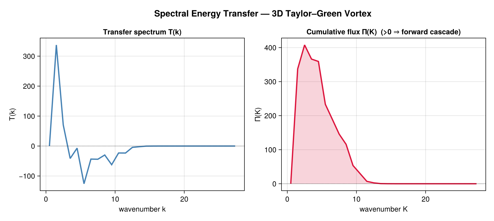
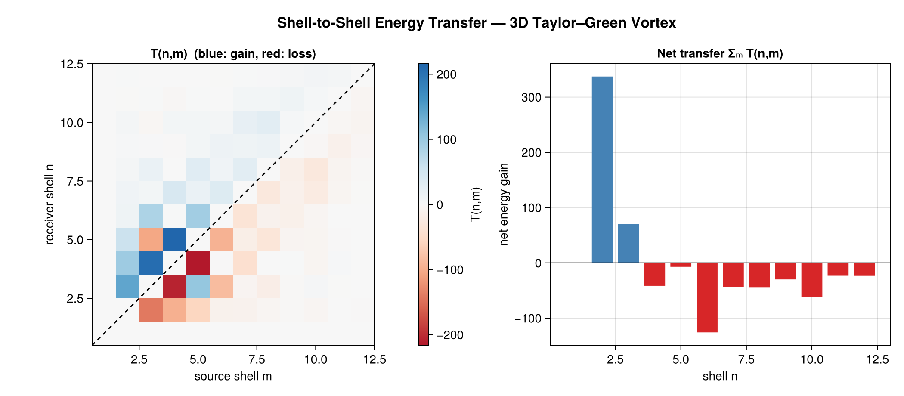
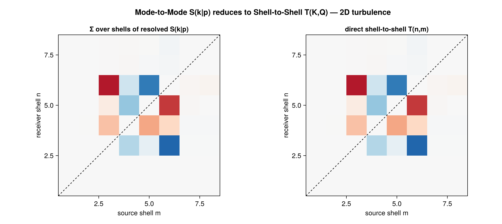
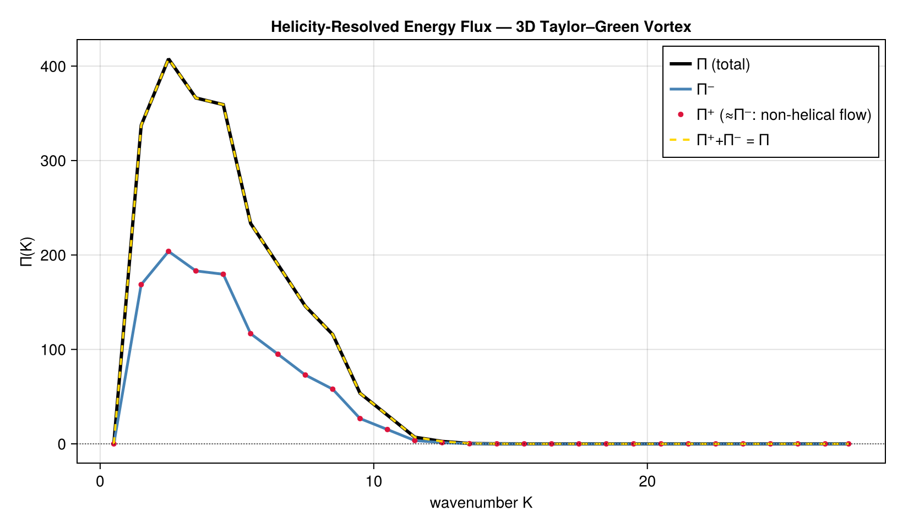
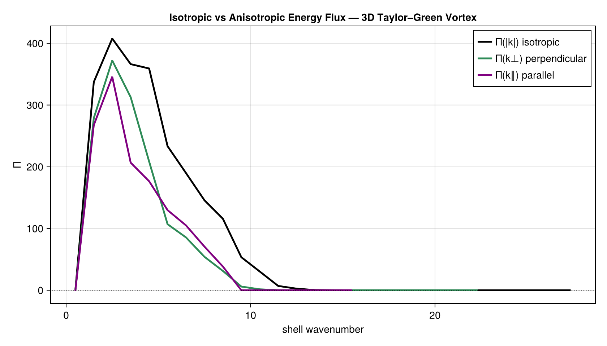
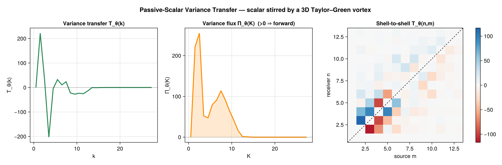
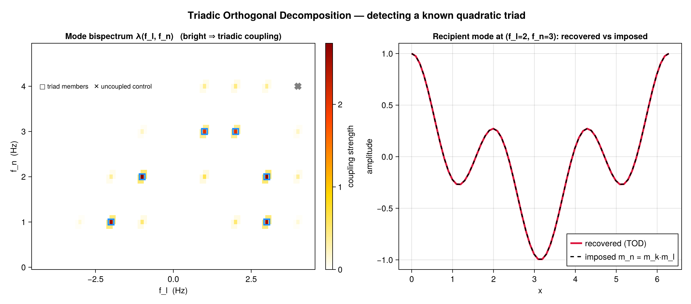
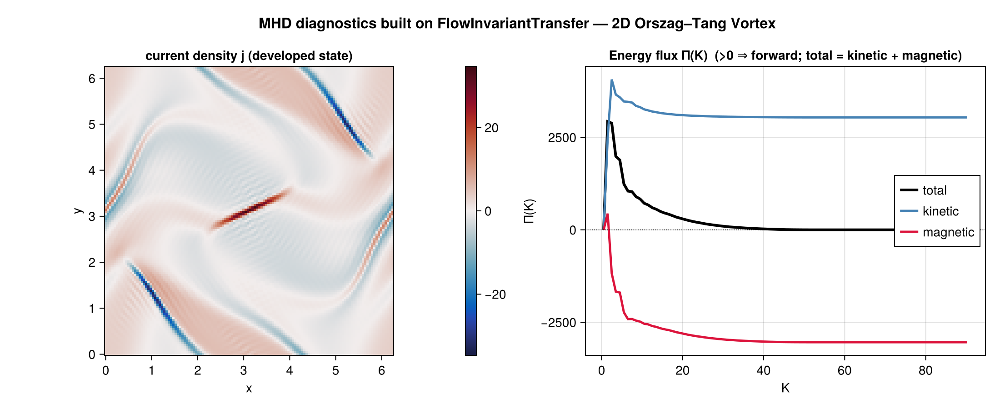
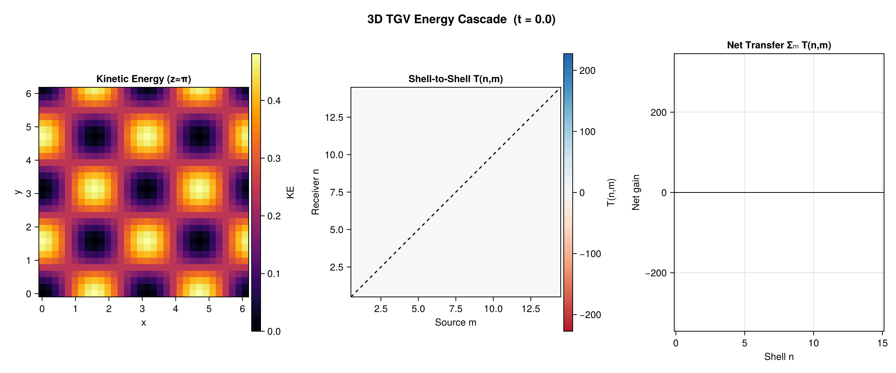

FlowInvariantTransfer.jl
FlowInvariantTransfer.jl is a general, domain-agnostic toolkit for the cross-scale transfer of quadratic inviscid invariants in turbulence. Its core is one validated pseudospectral nonlinear term (u·∇)f — the advection of any field f by any velocity u — wrapped in generic reduction machinery, field decompositions, anisotropic shell geometry, and a choice of exact dealiasing. It applies equally to homogeneous turbulence, atmosphere/ocean flows, passive tracers, or abstract fields; domain models (e.g. MHD) build on top of it. Works in 1D/2D/3D/N-D with the velocity-component count decoupled from the spatial dimension (2D-3C flows are first-class), with an allocating API and zero-allocation !-variants.
Diagnostic Methods
| Method | Function | Output |
|---|---|---|
| Spectral flux | calculate_spectral_flux | T(k), Π(K) |
| Shell-to-shell | calculate_shell_to_shell_transfer | T(n,m) |
| Mode-to-mode | calculate_mode_to_mode_transfer | resolved S(k|p) |
| Smooth band-to-band | calculate_band_to_band_transfer | T(K,Q) (graded bands) |
| Partial fluxes | calculate_partial_fluxes | Π^{s_k s_p s_q}(K) |
| Coarse-graining | calculate_coarse_graining_flux | Π_ℓ(x) |
| TOD | triadic_orthogonal_decomposition | mode bispectrum + modes |
The hierarchy is exact: S(k|p) → (sum over givers) → T(k) → (cumsum) → Π(K); and S(k|p) → (sum over shells) → T(n,m).
Invariants (invariant=): KineticEnergy, Helicity, Enstrophy, PassiveScalar (+ scalar convenience wrappers, and the buoyancy/APE & QG mapping). Decompositions (decomposition=): HelmholtzDecomposition, HelicalDecomposition, ToroidalPoloidalDecomposition. Geometry (geometry=): IsotropicShells, PerpendicularShells, ParallelShells. Dealiasing (dealiasing=): OrszagTwoThirds (default), NoDealiasing, PaddedThreeHalves (exact 3/2 padding).
Installation
using Pkg
Pkg.add("FlowInvariantTransfer")The core is dependency-free (DirectSumBackend); load FFTW for the O(N log N) FFTBackend and other packages for optional features.
Backends
Two orthogonal axes: spectral (transform: DirectSumBackend, FFTBackend, …) × execution (parallelism: SerialBackend, ThreadedBackend, DistributedBackend, GPUBackend).
| Diagnostic | Direct | FFT | Threaded | Distributed | GPU |
|---|---|---|---|---|---|
| Spectral flux | ✓ | ✓ | ✓ | ✓ | ✓ |
| Shell-to-shell | ✓ | ✓ | ✓ | ✓ | ✓ |
| Mode-to-mode | ✓ | ✓ | ✓ | ✓ | ✓ |
| Band-to-band | ✓ | ✓ | ✓ | ✓ | ✓ |
| Partial fluxes | ✓ | ✓ | ✓ | ✓ | ✓ |
| TOD | ✓ | ✓ | ✓ | — | — |
See Backends, Dealiasing & Extensions for the extension table.
Quickstart: spectral flux Π(K)
using FlowInvariantTransfer, FFTW
N = 64; L = 2π
ks = wavenumber_grid((N, N), (L, L))
û = randn(ComplexF64, N, N, 2)
result = calculate_spectral_flux(û, ks;
binning = LinearBinning(2π / L),
spectral = FFTBackend())
result.k_shells # shell-centre wavenumbers
result.transfer_spectrum # T(k)
result.flux # Π(K) — >0 forward, <0 inverseQuickstart: shell-to-shell T(n,m)
r = calculate_shell_to_shell_transfer(û, ks;
binning = LinearBinning(2π / L), spectral = FFTBackend())
r.transfer_matrix # T(n,m)
r.max_antisymmetry_error # ≈ 0 for incompressible fieldsQuickstart: mode-to-mode (resolved triads)
m = calculate_mode_to_mode_transfer(û, ks; spectral = FFTBackend()) # O(N^{2D}); small grids
m.net_transfer # T(k) = Σ_p S(k|p)
m.transfer # resolved S(k|p)Quickstart: passive scalar
θ̂ = randn(ComplexF64, N, N)
sf = calculate_scalar_flux(û, θ̂, ks; binning = LinearBinning(2π/L), spectral = FFTBackend())
sf.flux # Π_θ(K) — forward variance cascadeQuickstart: anisotropic + helical (3D)
# directional flux Π(k⊥)
Πperp = calculate_spectral_flux(û3, ks; binning=b, spectral=FFTBackend(),
geometry=PerpendicularShells())
# helical 8-channel partial fluxes
hp = calculate_helical_partial_fluxes(û3, ks; binning=b, spectral=FFTBackend())
hp.channels[(1,1,1)] # homochiral (+++)
hp.total # == full KE fluxQuickstart: exact 3/2 dealiasing
calculate_spectral_flux(û, ks; binning=b, spectral=FFTBackend(), dealiasing=PaddedThreeHalves())Quickstart: Triadic Orthogonal Decomposition
using FlowInvariantTransfer, FFTW
X = randn(256, 1, 32) # (nt, nvar, nx)
method = TriadicOrthogonalDecompositionMethod(nfft=64, noverlap=32, nmode=2)
result = calculate_energy_transfer(method, X; dt=0.01, spectral=FFTBackend())
result.frequencies; result.mode_bispectrum; result.modes; result.modal_energy_budgetZero-alloc hot loop
ws = ShellToShellWorkspace(û, ks, LinearBinning(2π / L))
calculate_shell_to_shell_transfer!(result, ws, û, ks; spectral = FFTBackend()) # 0 allocsGallery
Every figure is produced by a script in examples/ run on a canonical evolved flow (not random noise), so the physics is verifiable by eye. Run any with julia --project=examples examples/<name>.jl.
Spectral flux Π(K) — forward energy cascade (3D Taylor–Green vortex). T(k) injects at low k; the cumulative flux Π(K) > 0 across the inertial range is the 3D forward cascade.

Shell-to-shell T(n,m) (3D TGV). Antisymmetric near-diagonal band (blue gain / red loss) and the low-shell-gain / high-shell-loss net transfer — the cascade resolved scale-by-scale.

Mode-to-mode S(k|p) reduces to shell-to-shell T(n,m) (2D turbulence). The resolved tensor summed over shells (left) reproduces the directly-computed T(n,m) (right) — the reduction hierarchy.

Helicity-resolved flux Π± (3D TGV). Π⁺ ≈ Π⁻ and Π⁺+Π⁻ = Π because the TGV is non-helical.

Isotropic vs. anisotropic flux (3D TGV). Π(|k|) vs. perpendicular Π(k⊥) and parallel Π(k∥) directional fluxes from the anisotropic shell geometry.

Passive-scalar variance transfer (scalar stirred by a 3D TGV). The same engine on a different quadratic invariant: T_θ(k), Π_θ(K), and the scalar shell-to-shell matrix.

Triadic Orthogonal Decomposition — detecting a known quadratic triad. The bispectrum lights up on the imposed triad family (control stays dark); the recipient mode is recovered.

MHD diagnostics built on top of the public API (2D Orszag–Tang). Total/kinetic/magnetic energy fluxes assembled from public primitives, total = kinetic + magnetic — magnetism is not in the core.

Cascade animation
Shell-to-shell T(n,m), net transfer, and a KE slice for a 3D TGV (N=32³) developing from t=0 to t=10 — the forward cascade building in time.

See Also
- Methods & Theory — mathematical background for each diagnostic
- Architecture — internal design and dispatch
- Backends, Dealiasing & Extensions — backends and the extension table
- API Reference — full docstring index
```